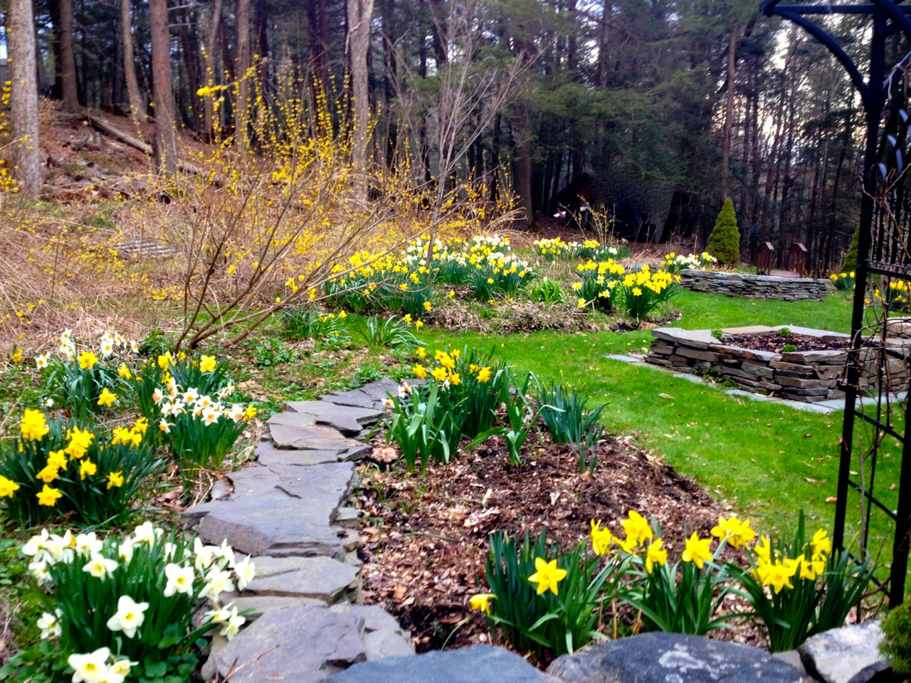

Boutique shops at/near Forest Hall
(stone building at the intersection of Harford St and Broad St) (clothing, fine
arts, craft art, home, fine antiques, used book store)
The Shops at Apple Valley
The Shops at the Water Mill
Key Food grocery store (has prepared foods)
Kmart, Lowes, and Walmart on Route
209
Eateries
Village Diner (on 209)
Dairy Bar on Harford St - for ice
cream
Milford Diner on Broad St
Tequila Sunrise Cafe: Casual
hearty Mexican. Large portions. Garden out back.
Waterwheel Cafe:
Mostly American cuisine with a Vietnamese offerings.
Chang Mao: Classic Chinese-American
cuisine
Apple Valley: American
Dimmick Inn:
American
Bar Louis at the Hotel Fauchere:
Higher end dining. Basement entrance
Delmonico Room at the Hotel Fauchere:
Fancy dining. Nice porch seating for lunch.
Patisserie Fauchere:
next to the Hotel Fauchere: Great baked goods and
coffee, breakfast and lunch
Fretta's
Italian Specialities: old school Italian deli with
good prepared foods

The garden in early spring.
House Details
Basement access:
The basement is off limits (except in emergency) for the protection of our
guests.
Computer: The
house computer is logged onto a guest login. The software is old, so some web
sites may not work. But it plays DVDs just fine!
Contact:
Ed Debesis, 570-369-7157. He is about 20 minutes away.
Secondary contact, if Ed is away, or you need help sooner than 20 minutes:
Laura Nathan, next door neighbor, 570-409-1906.
Dishes, pots, pans, silverware:
You may use
anything we have. We have lots of pots, pans, and cooking utensils. We supply
both disposable and non-disposable plates, cups, and silverware.
You may use either, but we ask you to wash
the non-disposable items if you use them.
Finding the house:
453 Grand Army of the Republic Highway. Across the street from the Eureka Stone
Quarry. 1.4 miles west of exit 46
on I-84. There are two orange cones at either side of the top of the driveway.
If you enter a driveway with no orange
cones at the side, that is our next-door-neighbors' driveway. Don't worry, they
are very friendly!
Food:
You are welcome to any food in the house
including spices, condiments, oils, vinegar, salt, sugar, and so on. We attempt
to keep most common items like this in stock, but occasionally something may
run out and we miss it. We try to throw away anything that goes out of date,
but please do check the date on the package yourself as well!
Garbage:
Bag garbage and leave it in the kitchen (or the basement if you are on a longer stay). Do not leave it outside: it will attract bears!
If you need a trash pickup during a long stay, let us know!
Grill and fire pit:
Please keep them in the gravel area
beyond the deck. Do not bring them up on the deck (fire hazard!) or onto the
lawn (kill the grass hazard!). We may have charcoal on hand, and if we do, you
are welcome to it, but we do not guarantee it will be there, so you may need to
pick some up. We try to leave
grilling utensils and heat resistant gloves on the picnic table by the entrance,
but people bring them inside, so you may need to look around.
Key:
We have an electronic entry system. You
will be assigned an entry code before your stay. To re-lock the door, press on
the word "Schlage" at the top of the keypad.
Phone: Cell
reception inside the house is sometimes spotty: walking out onto the porch
usually helps! You may use the house phone if you wish. The number is
570-296-4276.
Shower: It used to take a long time for the hot
water to kick in but this is fixed. Any problems let us know!
Sinks and Toilets:
We have a septic system. Please be careful what you send down the drains,
especially no harsh anti-bacterial agents like bleach. They kill the bacteria
that make a septic system work.
Thermostat: When
you walk in the house, it is directly in front of you on the wall. Set it where
you would like. When you leave, please turn it down to 52 degrees.